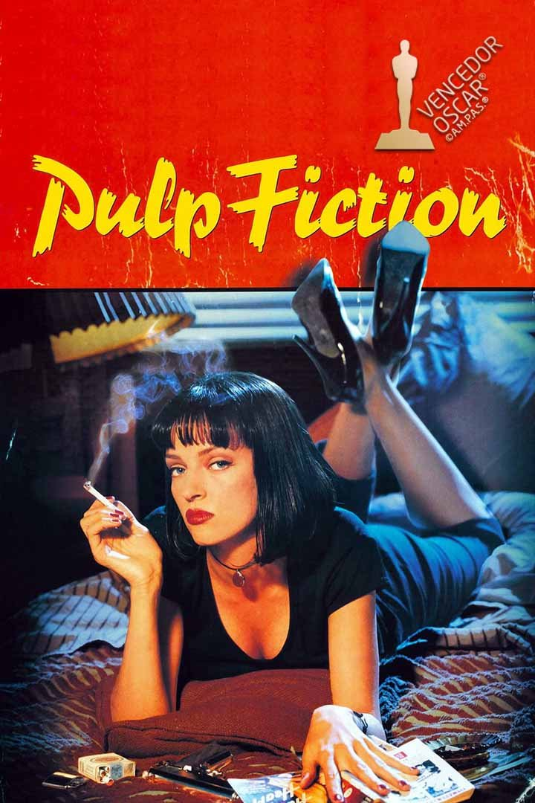

Pulp Fiction
Diretor: Quentin Tarantino
Com: John Travolta, Samuel L. Jackson, Uma Thurman, Harvey Keitel, Tim Roth, Amanda Plummer e Bruce Willis
Censura:18 anos
Tempo de duração: 154 min
Sinopse: Vincent Vega (John Travolta) e Jules Winnfield (Samuel L. Jackson) são dois assassinos profissionais trabalham fazendo cobranças para Marsellus Wallace (Ving Rhames), um poderosos gângster. Vega é forçado a sair com a garota do chefe, temendo passar dos limites; enquanto isso, o pugilista Butch Coolidge (Bruce Willis) se mete em apuros por ganhar luta que deveria perder.